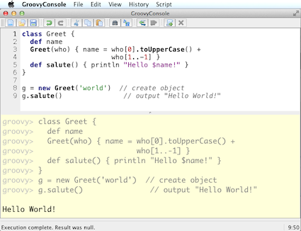

Fundamentos y principios de Groovy
Eres un desarrollador Java...
Groovy es Java y Java es Groovy...
Eres un desarrollador Groovy!
Ejecutando código Groovy
Instalación convencional
- Tener el JDK instalado
- Establecer la variable JAVA_HOME y agregarla al PATH en el subdirectorio /bin
- Descargamos la distribución de Groovy en http://groovy.codehaus.org/
- Creamos una variable de entorno GROOVY_HOME apuntando al directorio donde se descomprimió la distribución
- Adicionalmente, incluir en el PATH el directorio /bin de la variable de entorno GROOVY_HOME, es decir: %GROOVY_HOME%/bin
- Let’s rock the code!!!
Acerca de la instalación
- El binario de la distribución soporta múltiples plataformas
- Algunas distribuciones Linux ya lo contemplan en sus repositorios
Instalación recomendada para *nix
GVM es una herramienta para administrar versiones paralelas de múltiples kits de desarrollos sobre la mayoría de sistemas Unix. Provee de una interfaz conveniente en línea de comando para instalar, cambiar, quitar y listar los kits candidatos.
GVM estuvo inspirado en RVM usado por la comunidad de Ruby.
Los kits que están actualmente soportados son:
- Groovy
- Grails
- Griffon
- Gradle
- Groovyserv
- Lazybones
- vert.x
Corre sobre las siguientes plataformas:
- Linux
- Mac OSX
- Cygwin
- Solaris
- FreeBSD (with bash installed)
GVM está escrito en bash y solamente necesitar tener instalado en el sistema operativo curl y unzip. El instalador checa por dichas dependencias antes de completar el proceso de instalación. Después, crea el directorio .gvm/ en el ‘home’ del usuario, para despúes descargar y configurar los kits que deseas.
Para instalar GVM y la última versión de Groovy solo tenemos que abrir una terminal de bash y teclear:
curl -s get.gvmtool.net | bash
gvm install groovy
Groovy Shell => groovysh
Sólo abre una consola y escribe ‘groovysh’, comienza a codificar:
❯ groovysh
Groovy Shell (2.1.7, JVM: 1.7.0_06-ea)
Type 'help' or '\h' for help.
--------------------------------------
groovy:000> println "Hola MakingDevs!"
Hola MakingDevs!
===> null
groovy:000>
Ejecución desde línea de comando
Crea un archivo de texto con la extensión .groovy y desde línea de comando ejecutalo:
❯ groovy archivo.groovy
Realmente lo que sucede es que Groovy compila y ejecuta el contenido del archivo pero no nos entrega el bytecode; si deseamos obtenerlo entonces tenemos que decirle que lo genere:
❯ groovyc archivo.groovy
Bytecode! ¿Qué podemos hacer con bytecode?
Uso de la GroovyConsole
Para ejecutarlo en la consola escribimos: groovyConsole

De Java a Groovy
HolaMundo en Java
public class HolaMundo {
private String nombre;
public String getNombre() {
return nombre;
}
public void setNombre(String nombre) {
this.nombre = nombre;
}
public String saluda() {
return "Hola " + this.nombre + " !!!";
}
public static void main(String[] args) {
HolaMundo objeto = new HolaMundo();
objeto.setNombre("@grailsmx");
System.out.println(objeto.saluda());
}
}
HolaMundo en Groovy
public class HolaMundo {
private String nombre;
public String getNombre() {
return nombre;
}
public void setNombre(String nombre) {
this.nombre = nombre;
}
public String saluda() {
return "Hola " + this.nombre + " !!!";
}
public static void main(String[] args) {
HolaMundo objeto = new HolaMundo();
objeto.setNombre("@grailsmx");
System.out.println(objeto.saluda());
}
}
7 pasos => De Java a Groovy
Quitamos lo que es 'obvio'
- Toda clase, método, campo en Groovy tiene acceso público a menos que se especifique lo contrario
- ‘;’ es opcional al final de la línea en la mayoría de los casos
La ceremonia de Java
- Estático vs. Dinámico == Ceremonia vs. Esencia
- Según la convención de JavaBean, cada propiedad requiere de un par de métodos (get/set)
- El método main() siempre requiere de Strings[] como parámetro
- Imprimir a consola es muy común, acaso existe alguna %&/(&/$·%) manera más corta???
Los tipos dinámicos
- La palabra reservada def se usa cuando no es necesario indicar el tipo específico de una variable, método o campo( es como var de Javascript)
- Groovy averiguará el tipo correcto en tiempo de ejecución, esto habilita entre otras cosas lo que se conoce como duck typing
Interpolación de variables
- Groovy permite la interpolación de variables a través de GStrings (como Perl)
- Basta con precederla de $ o rodearla de ${} para usarlo
Otras palabras reservadas
- La palabra ‘return’ es opcional en muchos casos, el valor de retorno será el valor de la última expresión evaluada en el contexto
- La palabra def no es necesaria cuando se trata de métodos estáticos
Plain Old Groovy Objects(POGO)
- Los POJO’s (o POGO’s en Groovy) tienen un constructor por omisión que acepta un Map, dando la impresión de usar parámetros con nombres
- Los POGO’s soportan la notación de arreglo (bean[prop]) o la notación de objeto (bean.prop) para acceder a sus propiedades (lectura/escritura)
Lenguajes de scripting
- A pesar de Groovy compila a código byte, soporta programas tipo Script, los cuales también se compilan a código byte
- Todo Script permite definir clases en cualquier parte
- Todo Script soporta la definición de paquetes (package) puesto que al fin y al cabo son clases Java
HolaMundo en Java
public class HolaMundo {
private String nombre;
public String getNombre() {
return nombre;
}
public void setNombre(String nombre) {
this.nombre = nombre;
}
public String saluda() {
return "Hola " + this.nombre + " !!!";
}
public static void main(String[] args) {
HolaMundo objeto = new HolaMundo();
objeto.setNombre("@grailsmx");
System.out.println(objeto.saluda());
}
}
Nuevo HolaMundo en Groovy
class HolaMundo {
String nombre
def saluda() { "Hola ${this.nombre} !!!" }
}
def objeto = new HolaMundo(nombre:"@grailsmx")
println(objeto.saluda())
Ejecución de Groovy con Java
Unix - Linux
groovyc HolaMundo.groovy
java -cp $GROOVY_HOME/embeddable/groovy-all-2.1.7.jar:. HolaMundo
Windows
groovyc HolaMundo.groovy
java -cp %GROOVY_HOME%/embeddable/groovy-all-2.1.7.jar;. HolaMundo
Scripts y clases en Groovy
Declaración de clases
- Podemos declarar de la misma forma que una clase Java
- Hay flexibilidad en el nombre del archivo
- Podemos declarar más de una clase en un solo script
Persona.groovy
public class Persona {
private String nombre
public Date edad
protected Double peso
public Persona(){}
public Persona(Date edad){ this.edad = edad; }
public setNombre(String nombre){ this.nombre = nombre; }
}
MultiplesClases.groovy
class Perfil {
private String bio
private Persona persona
private String twitter
private String facebook
}
class Pedido {
Persona persona
Date dateCreated
Date lastUpdated
String toString() {
"$persona - $dateCreated"
}
}
Características de los scripts en Groovy
- Son archivos de texto, generalmente con la extensión .groovy
- La ejecución es directa no necesitamos compilar previamente(Groovy lo hace por nosotros)
- No necesitamos definir una clase para correrlo
- Si el script necesita de otras clases, no necesita compilarlas para usarlas
Datos importantes de los scripts
- Si un archivo .groovy no declara un clase, es transparentemente envuelto en una clase tipo Script
- El contenido del script es contenido en el método run() y este a su vez puesto en un main() construido por Groovy
- Si un archivo Groovy contiene exactamente la declaración de una clase con el mismo nombre del archivo(sin la extensión), se comporta como Java
- Un archivo Groovy que contenga la declaración de varias clases, no esta forzado a que el nombre del archivo coincida con alguna clase
- Un archivo Groovy con la mezcla de clases y scripts, conlleva a que el código del script sea la clase principal a ser ejecutada, por lo tanto, no debemos declarar una clase con el mismo nombre del archivo
Scripting.groovy
class Perfil {
private String bio
private Date bornDate
private Persona persona
private String twitter
private String facebook
}
class Pedido {
Persona comprador
Date dateCreated
Date lastUpdated
String toString() {
"$comprador - $dateCreated"
}
}
Persona persona = new Persona()
persona.setNombre("Desarrollador");
println persona
Perfil perfil = new Perfil()
try{
perfil.setBio("My bio")
}catch(Exception e){
println "No se puede establecer la biografia..."
}
Pedido pedido = new Pedido()
pedido.setDateCreated(new Date())
pedido.setComprador(persona)
println pedido
Recuerda!
Puedes analizar la clase con
javap.
POGO’s
Los JavaBeans son clases Java comúnes que exponen sus propiedades. Si una clase expone métodos con un esquema de nombrado como getNombre() y setNombre(nombre), entonces se describe a ‘nombre’ como una propiedad de la clase. Los métodos ‘get’ y ‘set’ son llamados métodos de acceso. Y las propiedades booleanas pueden usar el prefijo ‘is’.
La convención de JavaBeans define un modelo ligero y generico para los componentes de software en Java. El modelo del componente esta construido sobre convenciones de nombrado que permiten a las clases Java exponerese ante otras clases o herramientas.
Un GroovyBean es un JavaBean definido en Groovy. Pero Groovy facilita el trabajo con ellos de varias formas:
- Generando los métodos de acceso
- Permitiendo el acceso simplificado a los JavaBeans
- Un registro simplificado de manejadores de eventos en conjunto con anotaciones para declarar una propiedad como bindable.
- Un constructor que recibe un mapa con los posibles valores de los atributos del Bean
Considera esto!
Posteriormente estaremos viendo el uso de mapas y es donde todo toma sentido....
MyBean.java
public class MyBean implements java.io.Serializable {
private String myProp;
public String getMyprop(){
return myprop;
}
public void setMyprop(String value){
myprop = value;
}
}
MyBean.groovy
class MyBean implements Serializable{
String myProp
}
Consideraciones de los POGO’s
Las propiedades pueden ser legibles o escribibles dependiendo del getter o setter disponible. Groovy siempre expone un atributo con sus métodos de acceso, pero podemos tener variantes:
- Si el atributo es señalado como private no se generan getters ni setters.
- Si la palabra reservada final es usada en la declaración del atributo entonces será de sólo lectura.
- Siempre se puede usar setProperty y getProperty para acceder a los atributos de un objeto.
Trabajando con POGO’s
Podemos hacer uso de los métodos de acceso existentes en un JavaBean de la manera Groovy, o bien, con Groovy generar los métodos de acceso para que Java los pueda usar como comúnmente lo hace.
object.getPropertyname()
object.setPropertyName(value)
object.getPropertyname()
object.propertyName
object.setPropertyName(value)
object.propertyName = value
object['propertyName'] = value
Además, podemos hacer nuestras propias implementaciones de los métodos de acceso y conservar los creados por Groovy; con ayuda del operador ‘@’ durante la invocación del método.
MethodAccesors.groovy
class DoublerBean{
public value
void setValue(value){
this.value = value
}
def getValue(){
value * 2
}
}
def bean = new DoublerBean(value:100)
assert 200 == bean.value
assert 100 == bean.@value
Notas adicionales
Differences from Java